Mechanical Engineering Masters StudentBoulder, CO
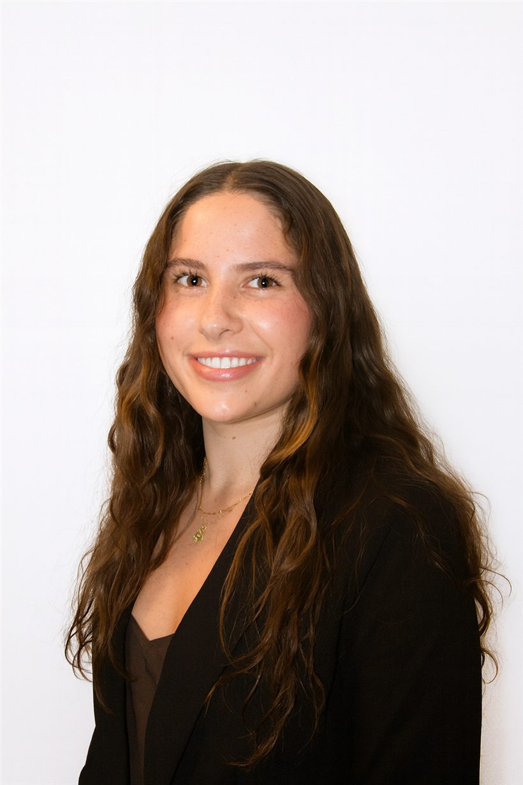
About
I'm a mechanical engineering student at the University of Colorado Boulder, where I earned my B.S. cum laude in 2026 and am now finishing an M.S. with a Leadership & Management Certificate.
I've interned at Denver Water and now at Integrated Water Services, and my graduate coursework centers on sustainable energy, thermal systems modeling and leadership courses. I bring collaboration, iterative design, and creative problem solving to all the teams I work on. As a Herbst Program Fellow I wrote about what sustainability should mean in practice for engineers, and I've taught Statics & Structures as a course assistant.
Outside of work I'm usually in the mountains: backcountry skiing, backpacking, hiking or running. The stove reverse-engineered further down this page comes on every trip. I also crochet, cook, and travel whenever I can, including a semester studying at University College Dublin and a summer studying in Sevilla, Spain.
Senior Design · Los Alamos National Laboratory
Hot tapping is routine on oil pipelines. Our seven-person team had to do it on tubing thinner than a pencil, without losing pressure or contaminating the system.
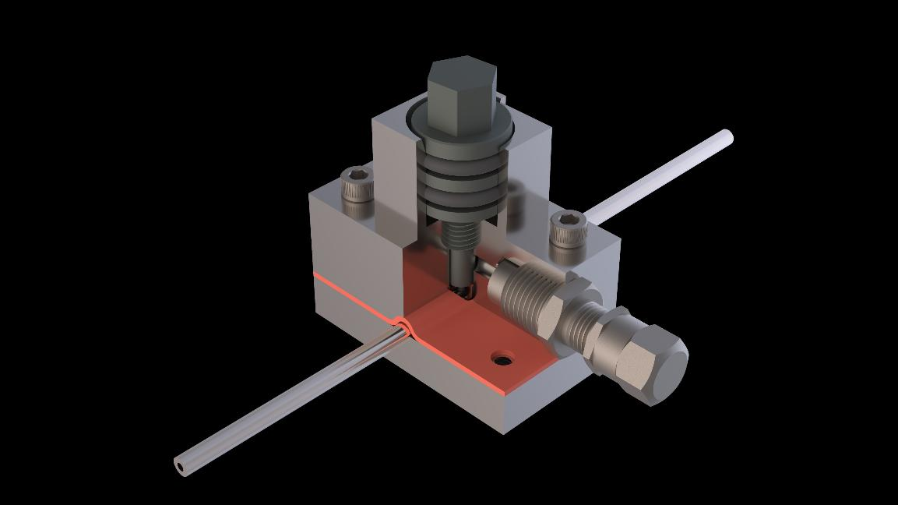
Los Alamos needed a way to access the internal environment of small-diameter lines while they stay live. The device clamps a stainless saddle onto the tube, seals it with a gasket and two Aflas O-rings, then drives a hardened punch through the wall. Gas exchanges through a standard Schrader valve.
Our first prototype failed in useful ways: the bottom gasket deformed the tube and the punch tip snapped in torsion. We moved to a flat-headed tip smaller than the tube's inner diameter, added a 0.020" fillet after stress analysis showed little gain past 0.018", and switched punch production from manual machining to a CNC lathe.
As Logistics Manager I handled communication among our team, the LANL sponsors and our faculty advisors while taking lead on the technical writing. As a design engineer I machined and assembled components and ran the iterative test campaign.
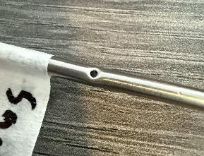
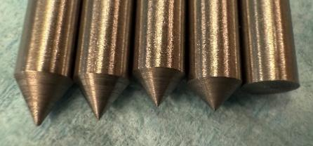
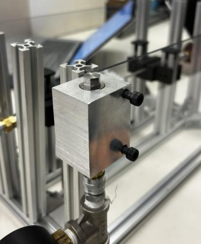
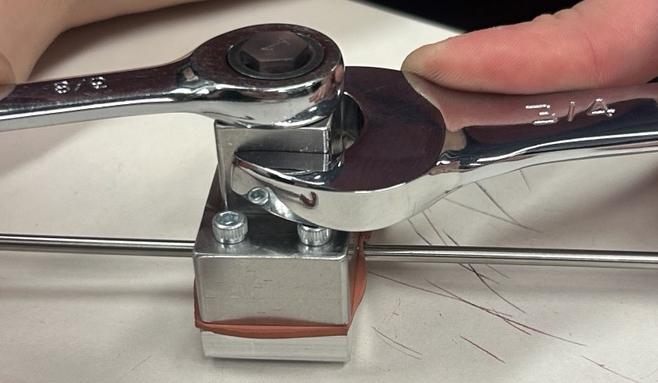
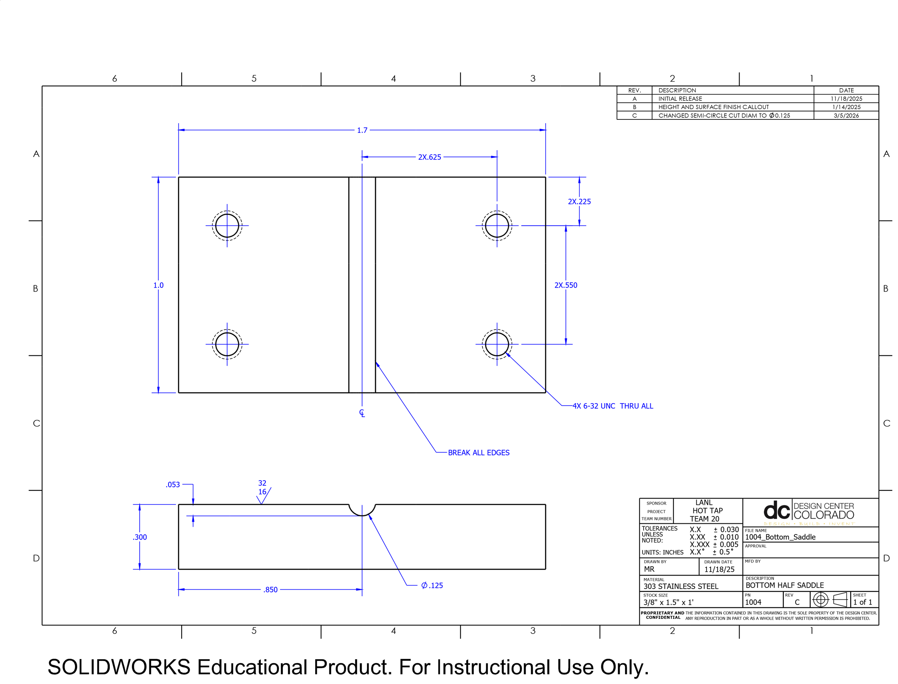
In the machine shop
This bottom saddle is the part I machined, both for our test fixtures and for the final prototypes. Making it took screw tapping for the four 6-32 holes, and surface finishing to the callout since it would need to be a pressure tight sealing surface.
I made iterations in both aluminum and stainless steel. Each material called for its own considerations, from cutting speeds to the order and choice of processes.
Internship · Denver Water · 2025
During peak season, water utilities need to know how many days a reservoir can reliably meet demand. I built a hydraulic model in Engineering Equation Solver that traces head loss through every element of the outlet works, from the intake through butterfly valves, a flow tube and open channels, to the basins of the treatment plant.
The model returns flow into the plant as the water surface drops. Above roughly 5,522 ft, valves throttle delivery to the plant's maximum; below it, flow falls off with elevation.
I also sized a heater for a hydraulic power unit oil reservoir with a combined conduction, convection and radiation analysis, and cross-checked more than 20 construction drawings against current configurations.
Flow into the treatment plant vs. reservoir level
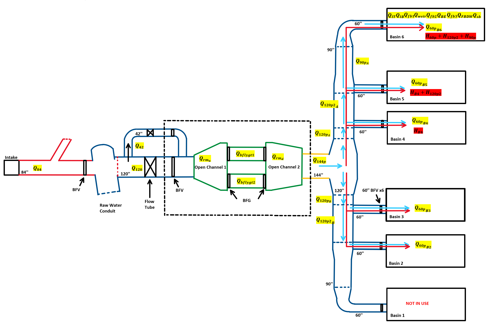
Modeling the system
I made this schematic to model the system using the assumptions made about geometry and flow. Flow rate and head loss relationships can be seen here and reflect the assumptions used.
Thermodynamics II · CU Boulder · 2026
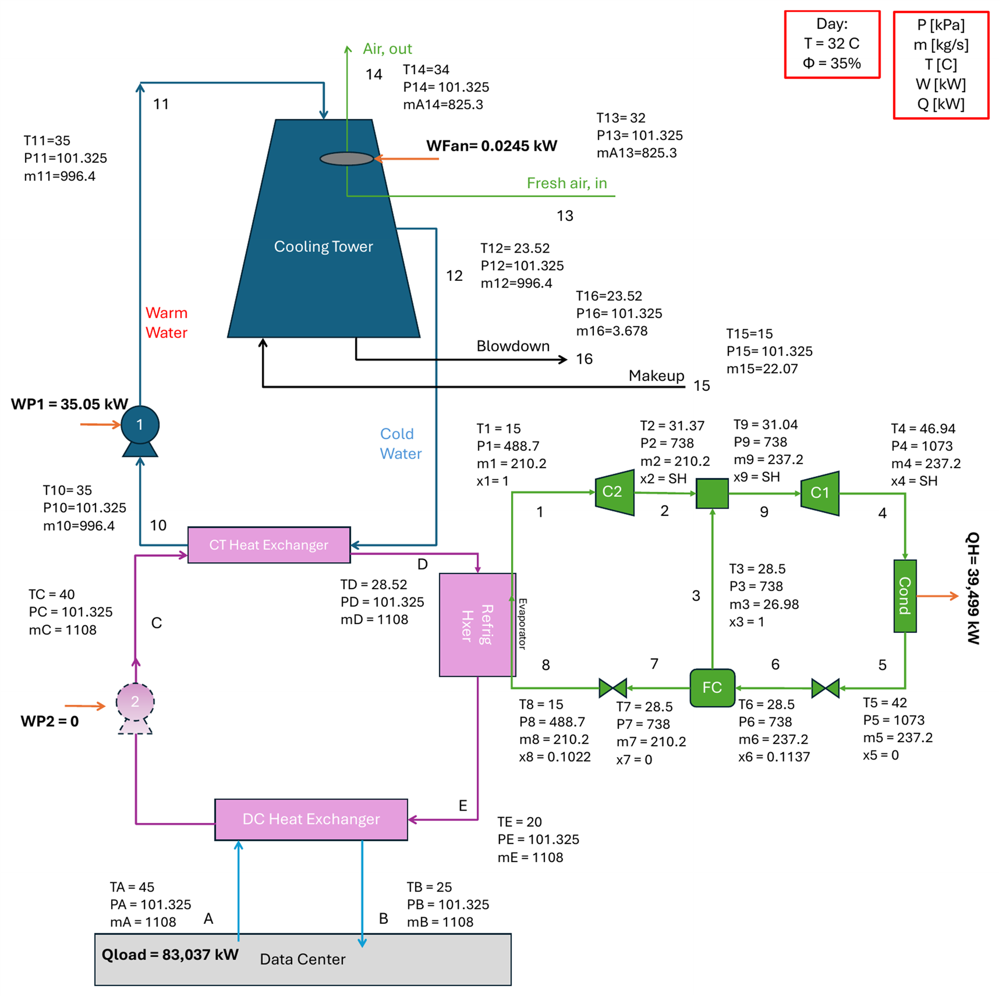
With two teammates I designed the chilled water plant for a data center rejecting 6,800 MMBTU per day. Heat leaves the servers through a service-water loop, crosses into a 30% glycol loop, and is split between an evaporative cooling tower and a two-stage R-134a refrigeration system with a flash chamber.
The cooling tower is the cheap path but depends on the weather, so the refrigeration cycle covers what the tower can't. We chose R-134a for its zero ozone depletion potential, and ran the tower at six cycles of concentration, which DOE guidance ties to 20% less makeup water and 50% less blowdown.
We modeled the day and night cases separately in Engineering Equation Solver and closed every energy balance to within 10−5 kW.
Computer-Aided Design · CU Boulder
Given a semester to reverse-engineer any object, I chose the MSR PocketRocket that comes on every backpacking trip. I measured each part, modeled it, and constrained the pot-support prongs to pivot and fold exactly like the real stove.
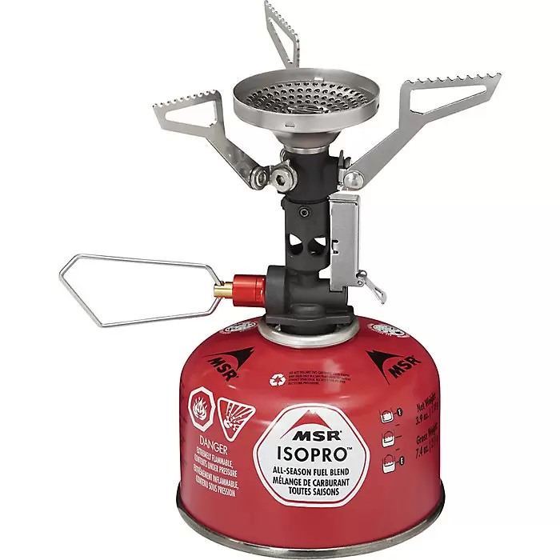
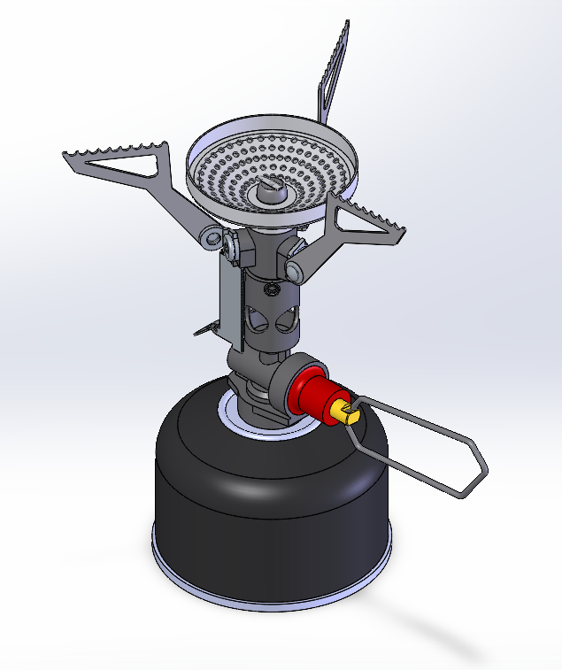
Every prong folds down on its real hinge. The model moves the way the stove does in camp.
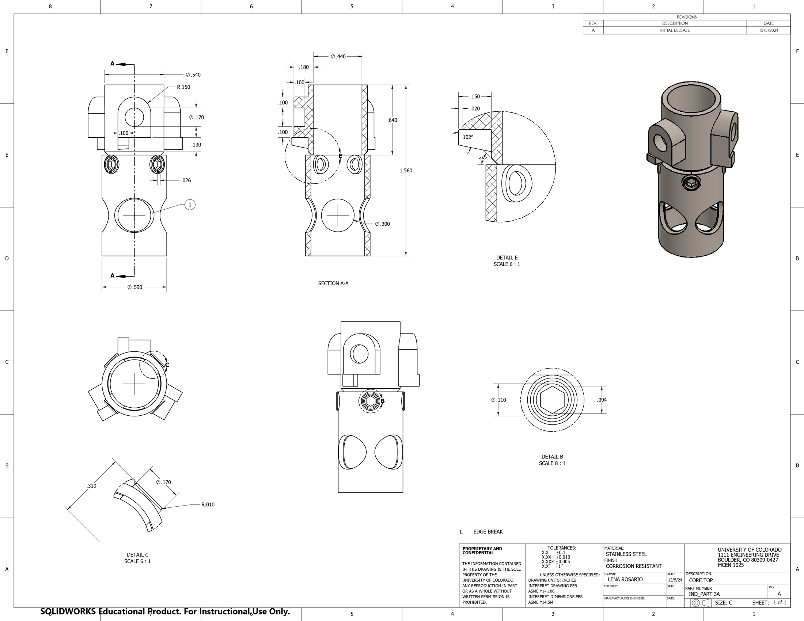
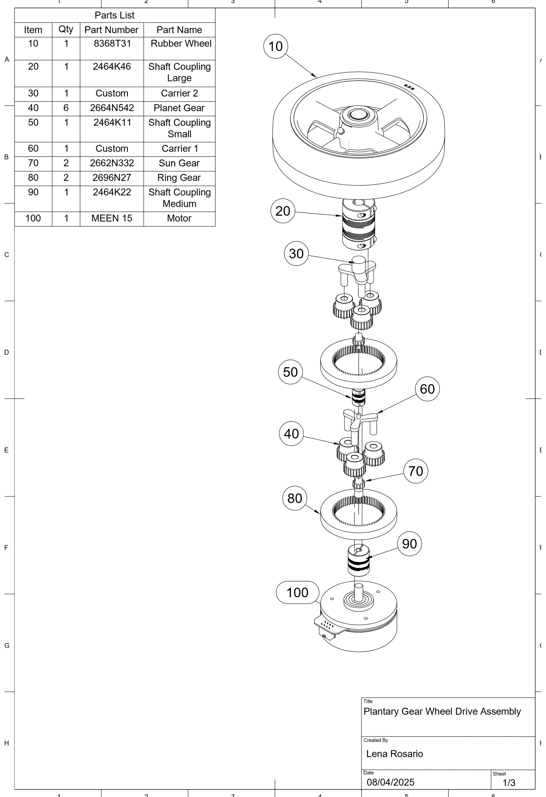
Mechanical Design I · University College Dublin
The brief: design one rear wheel and everything needed to turn it, for a robot that carries a fixed payload through hospital corridors. Required torque, a tight envelope, static friction and rolling resistance set the constraints.
I specified a two-stage planetary reduction between the motor and wheel, modeled it in Fusion 360, sourced the gears and couplings from McMaster-Carr, and estimated the cost to produce it.
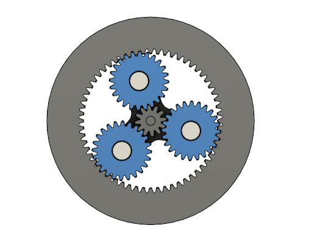
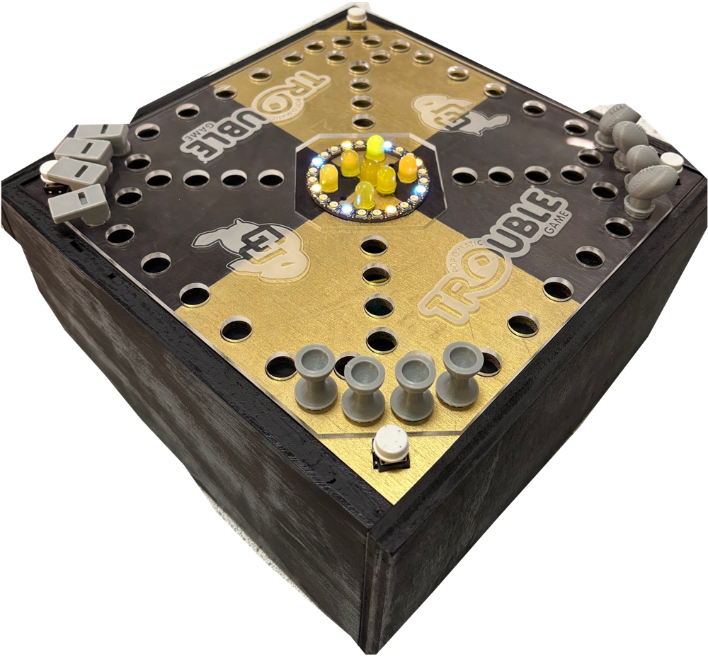
Engineering Projects · CU Boulder · 2024
Our team rebuilt a board game of our choice with an electronic component. We picked Trouble! and replaced the pop-o-matic die with a circuit: press the button in your corner and an Arduino spins an LED ring, then lights one to six bulbs.
We designed the circuit and laid out a custom PCB in Altium. I soldered the resistors and LEDs, wired the buttons, and troubleshot the system during assembly. The housing came together with 3D printing, laser cutting, and shop tools.
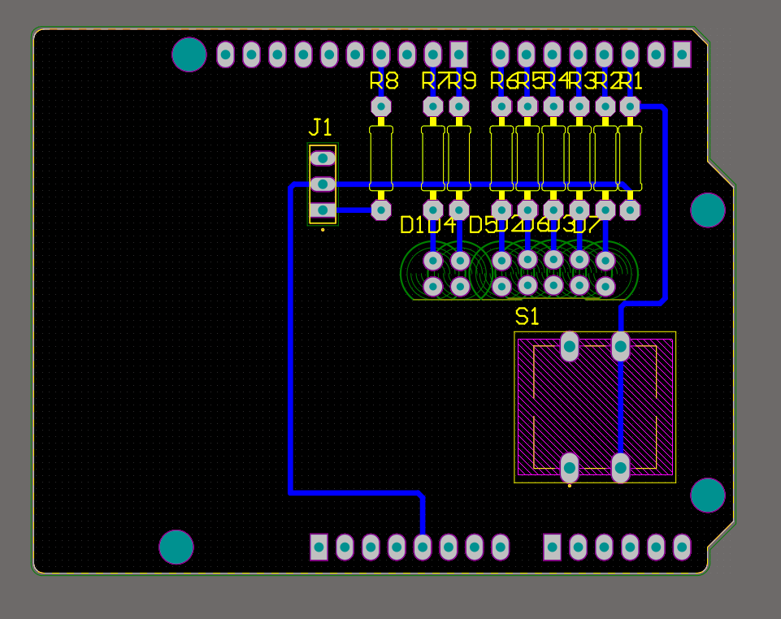
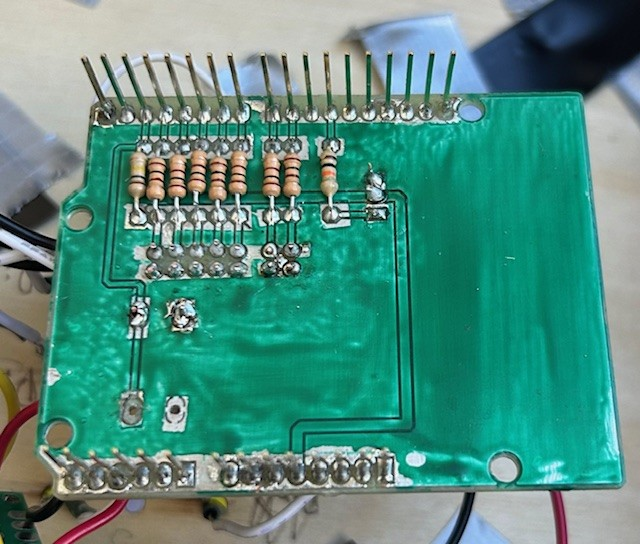
Independent study · Herbst Program for Engineering, Ethics & Society · 2026
"Since the definition of sustainability is vague, it becomes susceptible to getting reduced to a buzz word instead of an indication of measurable action."
As a Herbst Program Fellow I spent an independent study on sustainable development and wrote this essay, published by CU Boulder's Herbst Program. It starts from the College of Engineering's own vision of "engineering sustainable solutions" and asks what that phrase requires of the people doing the engineering.
The argument works on two levels. A broad definition sets shared goals and ethical boundaries, while discipline-specific frameworks turn those goals into practice. Without both, sustainability is hard to carry into the workplace. Cobalt mining for electric vehicle batteries shows the cost of the gap: a "green" supply chain that relies on unsafe, underpaid labor.
The essay closes on education. Programs like the University of Nebraska–Lincoln's Partners in Pollution Prevention, which pair technical theory with business pragmatics and field practice, can prepare engineers who know how to work sustainably within their own fields.
Also in the lab
As a lab assistant in CU's BEEM Lab I ran 20+ tests of sensor systems in LabVIEW and PSTrace, measured material conductivity, and helped prepare figures for publication.
Experience, newest first
Jun 2026 – Present
Integrated Water Services · Remote
Jun 2025 – Dec 2025
Denver Water · Denver
Aug 2025 – May 2026
Senior Design, sponsored by Los Alamos National Laboratory · CU Boulder
Nov 2023 – Dec 2024
BEEM Lab, CU Boulder
Education
University of Colorado Boulder · Leadership & Management Certificate
Expected May 2027
University of Colorado Boulder · GPA 3.7 · Dean's List all four years
Engineering, Ethics & Society Herbst Program Fellow
May 2026
University College Dublin, Ireland
Jan – May 2025
Certifications
Toolkit
Off the clock
Backcountry skiing, backpacking, trail running, crocheting, cooking, and travel.